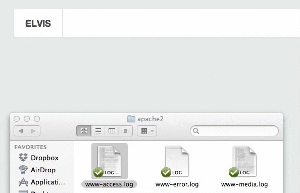
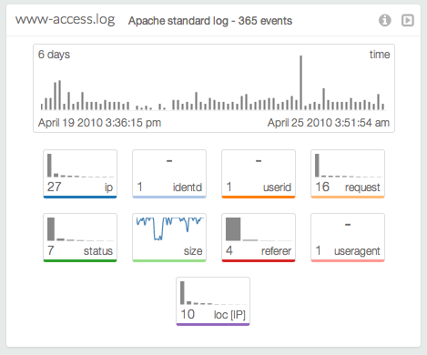
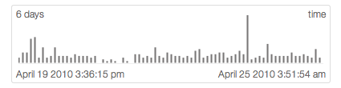
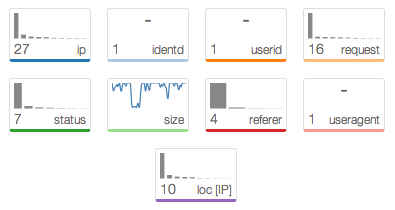

ELVis
Extensible Log Visualization
Hello.
- My name is Christopher Humphries.
- I'm a PhD student from Rennes, France.
- Working at INRIA/Supélec, in team CIDre.
- On a research grant from DGA-MI.
CIDre
We try to solve security problems.
- Intrusion DetectionAdHoc NetworksPrivacy
- I work on security visualization.
Why visualize ?
Generally
Help ourselves.
- Make more sense of data.
- Understand the big picture.
- Regain control.
In security
Bridge a gap.
- Manual analysis is slow.
- Automatic analysis is dumb.
However…
Extra knowledge required!
- statisticsfor the numbers
- designfor the colors
- psychologyfor brain compatibility
Solution
Move knowledge into software.
“Pshaw! It's been done before!”
Autovis
- Statistically automatic and unopinionated visualization.
Tableau
- Assisted and facilitated creation of general visualizations.
ELVis
- Parses logs
- Uses security semantics
- Assists exploration by selecting and matching visualisations
Log Organization
- Each log has a specific format
- Apache StandardSNORT…
- Log entries in one file have the same fields
- TimeSource IPDestination Port…
- Every log field has types
- OrdinalCategoricalTimeGeographical…
Log Augmentation
- Log datasets are augmented
- Horizontallyfields of certain types spawn extra fields
- IPspawnsGeolocation(IP)
- Verticallystatistical summary for each field
- MaxMinDistribution…
Automated Selection of Representations
- Informed decision based on stats and types.
- Nominalfields use distributionsPie charts, bar charts
- Timerequires trend visualizationsLine charts, gantt charts
- Geographicfields require spatial chartsMaps, real world layout
Log Acquisition
- Logs are parsed using the right format
- Files can be dragged in straight from the system

Summary View

Top Bar
- Dataset name, brief info, tools.
Key Field

- Basic visualization, filtering is already available.
- The key field is time so distribution of events is displayed.
Other Fields

- Displayed as small multiples according to type and stats.
- Distribution histogram forNominalfields.
- Line chart for trends inCardinalfields.
User Interaction
- Fields are selected and dragged to construct visualizations

Testing
Exploring the HoneyViz dataset.
- Patterns found! Ideas formed!
- Promising…
- Some logs were a strain to load…

Roadmap
User Experience
Better exploration.
- Brushing and Filtering.
- Chained visualizations.
Scalability
Larger and multiple datasets.
- Load more data.
- Compare and reference datasets.
- Server integrationSplunk, Hive?
- Sharing and collaboration.
Recording
Take notes, save configurations.
- Record datamining scenarios.
- Save effective dashboard arrangements.
- Inform the datasets.
- Help generate reports.
Technical Stuff
- Web based
- D3.js • Miso Chart • Miso Dataset
- Server prototypes in Node.js.